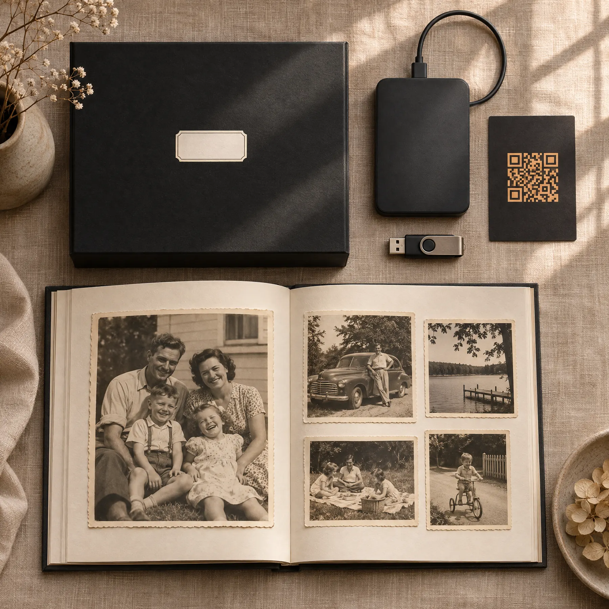

Acervo
CINEDocumentales de memoria
San Luis Potosí, México
Dirección: Isaac Cázares
HF Nº 014
La vida de Rosa
San Luis Potosí, 1941 a la fecha. Documental, [DURACIÓN]. Colección de la familia [APELLIDO].
Imagen ilustrativa
Sobre el acervo
Cada familia es una colección. Hacemos documentales de vida con el oficio del cine documental profesional, y los entregamos como una pieza de museo: con su número de catálogo, su ficha y su archivo.
No es un video de fotos ni de evento social. Es una película sobre una vida, con entrevistas, el archivo de la familia y escenas de su día a día, para que la conozcan las siguientes generaciones.
Índice
Tres líneas
Historias de familia
Una película sobre la vida de quien más quieres.
Planes
La entrega
La bóveda es suya. La sala es para verla.

Objetos de la entrega HF Nº 014. Imagen ilustrativa.
Todo en máxima calidad, en manos de la familia, sin depender de una nube ni de un teléfono. Y una tarjeta para verla donde sea.
Navidad 2026
Regala su historia.
Un certificado de regalo para un documental de Historias de familia. Se entrega en Navidad; la producción se agenda en 2027.
El estreno
El estreno es en casa, con toda la familia.
Conectas la USB a la tele o escaneas la tarjeta. Quienes viven lejos la ven el mismo día, desde donde estén.
Imagen ilustrativa
Dirección
Isaac Cázares
Editor y cineasta potosino. Lleva el oficio del documental profesional a las historias de las familias y los lugares de San Luis Potosí.